Высококонверсионные скрипты
и упаковка этапа Activation
Как из пути клиента (CJM) собрать продающий скрипт в 3 версиях и упаковать арсенал продавца, который можно отдать менеджерам — а не «красивый документ на полку».
 Где мы в программе
Где мы в программе
Приземляем стратегию на голос компании
Фокус — этап Activation
В Драйверах нашли, где узкое место. Сегодня качаем Activation: доводим лида до первой покупки через скрипт.
Цепочка
Стратегия AAARRR → карта CJM → скрипт → отдел контроля качества. ОКК развернём в отдельном модуле.
 С чем вы выйдете
С чем вы выйдете
Маршрут воркшопа
Почему 9 из 10 скриптов не продают
CJM — карта пути и точки провала
Анатомия скрипта: 9 блоков
ABC-сегменты · DISC · Crystal
ХПВ · ключевые фразы · возражения · каскады
⚡ Живая сборка блока + нейролевка
Арсенал продавца: что туда входит
Инструменты + домашка
 Главный тезис модуля
Главный тезис модуля
Отдел продаж — это голос компании. А скрипт — часть продукта.
«Не может быть такого, чтобы скрипт написал какой-то один человек — это всегда будет очень плохо». Сильный скрипт собирается из стратегии, JTBD и данных, продаётся команде и обучается — а не «прочитайте и используйте».
Почему скрипты не продают
- Один скрипт на всё — на все сегменты и этапы (а нужно 3–5)
- Пишет только отдел продаж — без продукта, маркетинга, фаундера
- Нет контроля ключевых элементов и метрик скрипта
- Обновляется раз в полгода — а рынок меняется быстрее
- Не анализируют лучших — практики топ-менеджеров не собраны

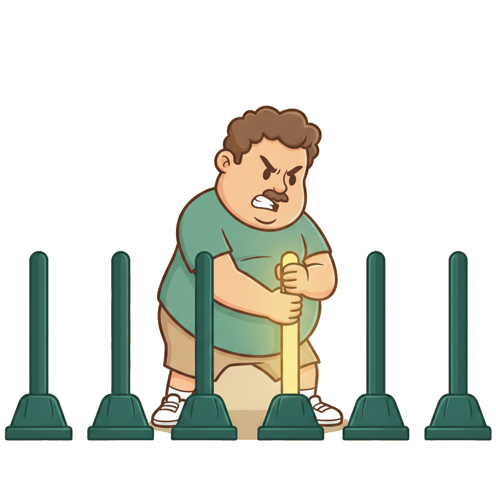
Блок 1 · Смысловая рамкаСкрипт продаёт не текст, а РАЗРЫВ
Задача скрипта — сделать осязаемым разрыв между точкой А (где клиент сейчас) и точкой Б (где хочет быть), и показать ваш продукт как самый быстрый мост.
Без рамки любой скрипт — вода. Рамка ставит продавца в позицию силы: не просим и не предлагаем — помогаем клиенту увидеть его же выгоду.
4 правила рамки
- Твёрдая позиция (эксперт, не проситель)
- Не просим / не предлагаем — открываем ценность
- Осознаём ценность своего продукта
- Твёрдость в каждом слове

Карта пути клиента
CJM — визуальная схема всех точек касания: осознание → рассмотрение → решение → покупка → удержание. По каждому этапу фиксируем:
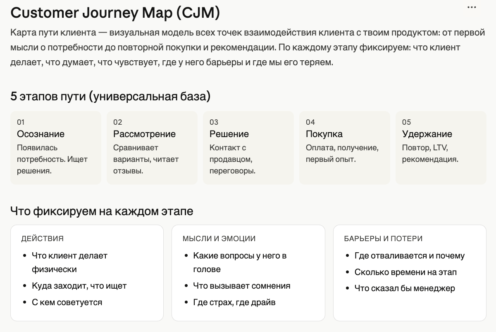

Эмоциональная кривая
Там, где ожидание клиента не совпало с реальностью — «дофаминовая яма». Каждый провал кривой = место, где вы теряете клиента и деньги.
Кейс: B2B, чек 60–200 млн ₽ — на CJM пресейла нашли негатив в неожиданной точке (туалет). Устранили микропровалы (музыка, чай, десерты) → сделка.
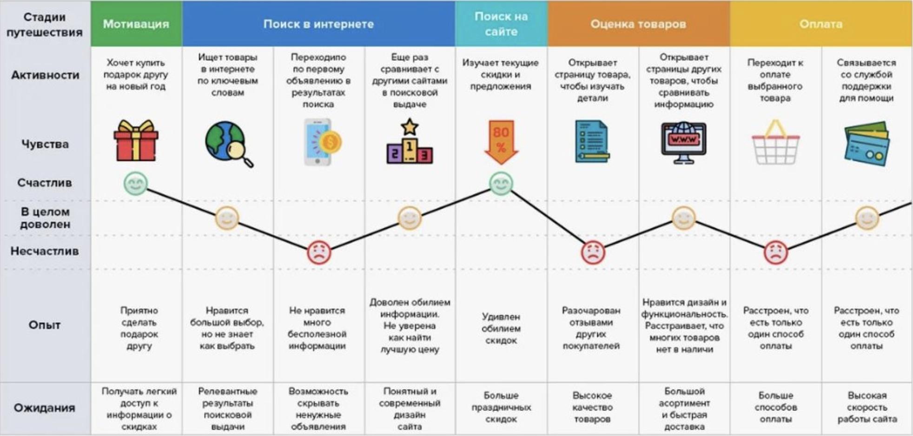
Как выглядит заполненный CJM
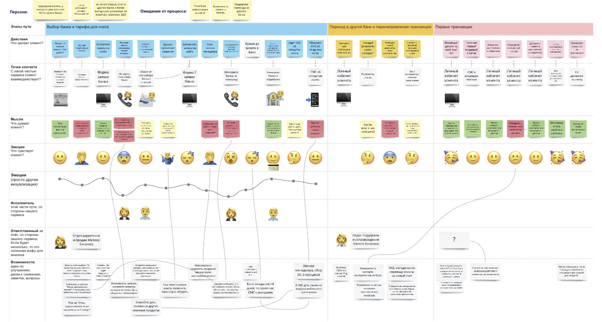
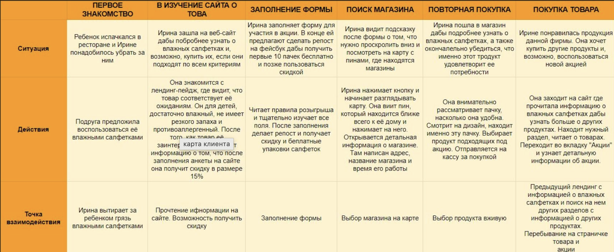
 Блок 2 · Экономика
Блок 2 · Экономика
Раньше 5–8 млн ₽. Сейчас — 0 ₽
В 2017 команда из 10 человек проектировала CJM для авиакомпаний за 5–6–8 млн ₽. Сегодня это делает Claude за 0 ₽ — «всё, что требуется, это компетентность».
CJM → скрипт → ОКК
Накладываем стратегию AAARRR на карту: где активировать продукт №1, upsell, cross-sell, рефералку — и где не предлагать, потому что половины аудитории уже нет.
CJM даёт карту → скрипт — инструкцию → ОКК проверяет исполнение. Одна связка, три уровня.
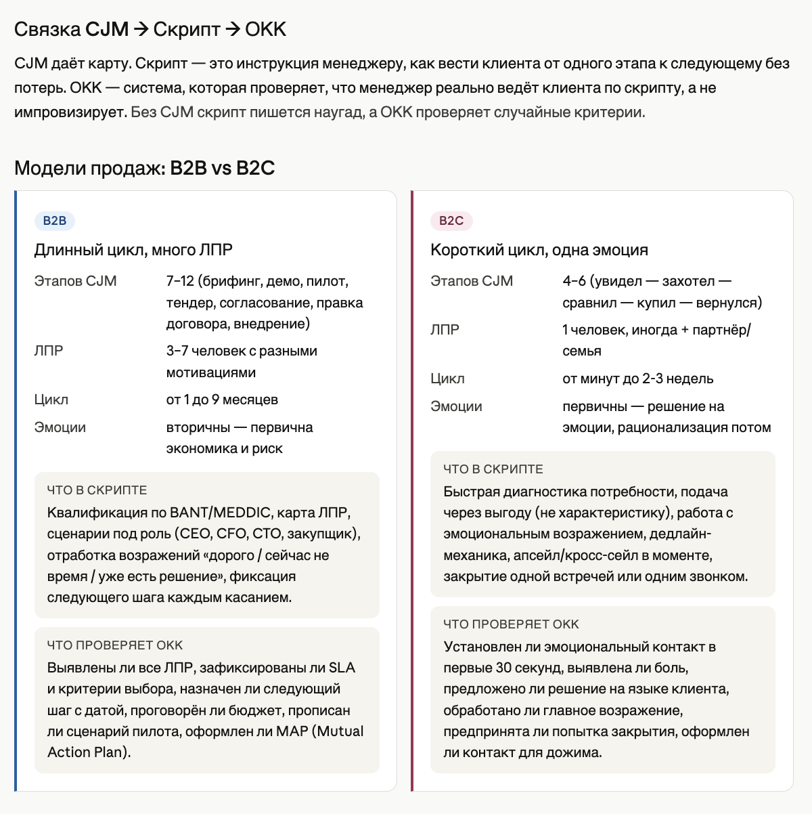
9 блоков высококонверсионного скрипта
- 1 Приветствие
- 2 Установление контакта
- 3 Программирование
- 4 Квалификация
- 5 Выявление болей
- 6 Презентация (ХПВ)
- 7 Предзакрытие
- 8 Отработка возражений
- 9 Закрытие
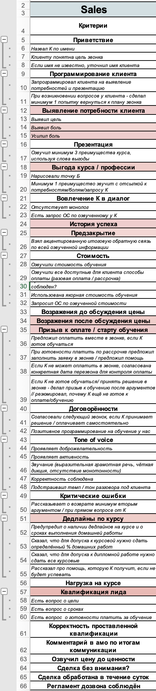
Блок 3 · Первые секунды
Приветствие · Контакт · Программирование
Контакт решает
Иногда «офис продаёт». Кейс: питчдек на $20 млн едва не слили, потому что не установили контакт — «они меня не слушали».
Программирование
Задаёшь клиенту, что сейчас будет происходить. Не спрограммировал — клиент «сам напридумывал, не в вашу пользу».
Якорь
Фраза-якорь «в любом случае мы с вами договоримся» + опережающая фраза про цену заранее.
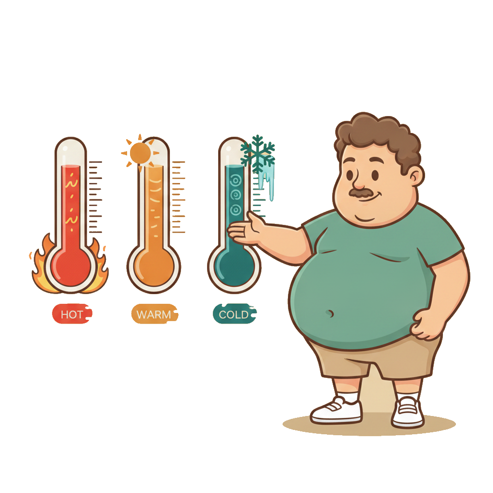
ABC — сегментация по температуре
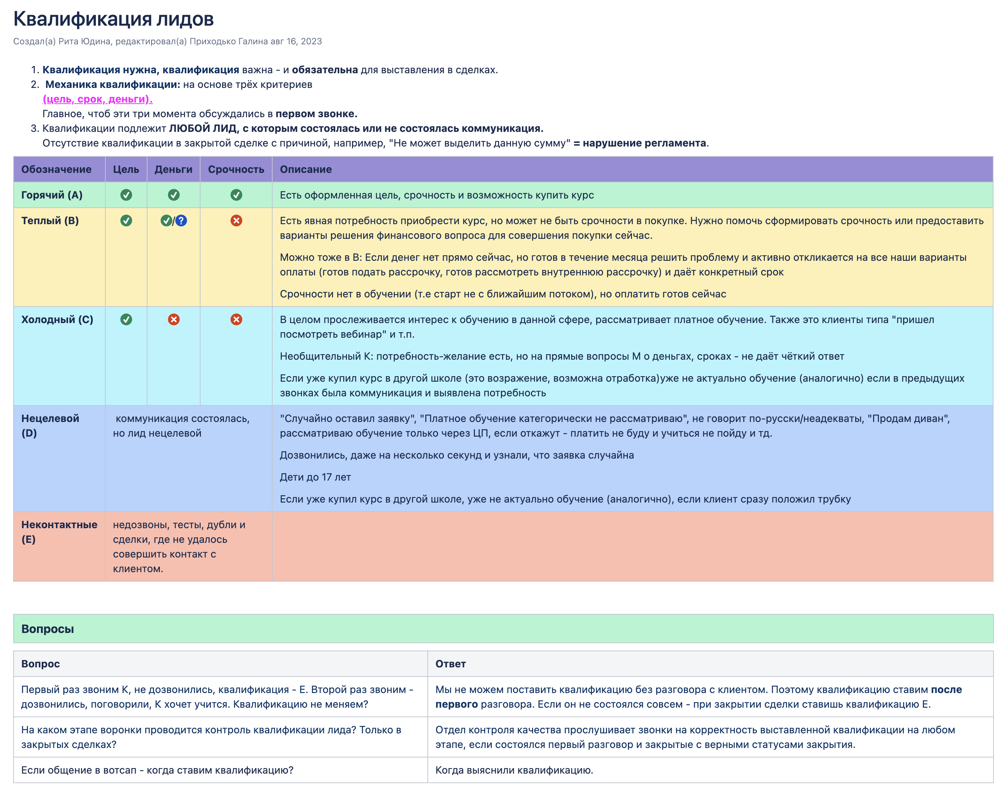
Блок 4 · Конверсионное окно
Лид остывает — управляем по дням
Конверсия когорты падает со временем. Поэтому цель ставится по дням, а недожатое запускает воронку дожима.
Недожать 2 п.п. по C-лидам = «несколько миллионов потеряли». Без сегментации и контроля отдел продаж уже теряет деньги.
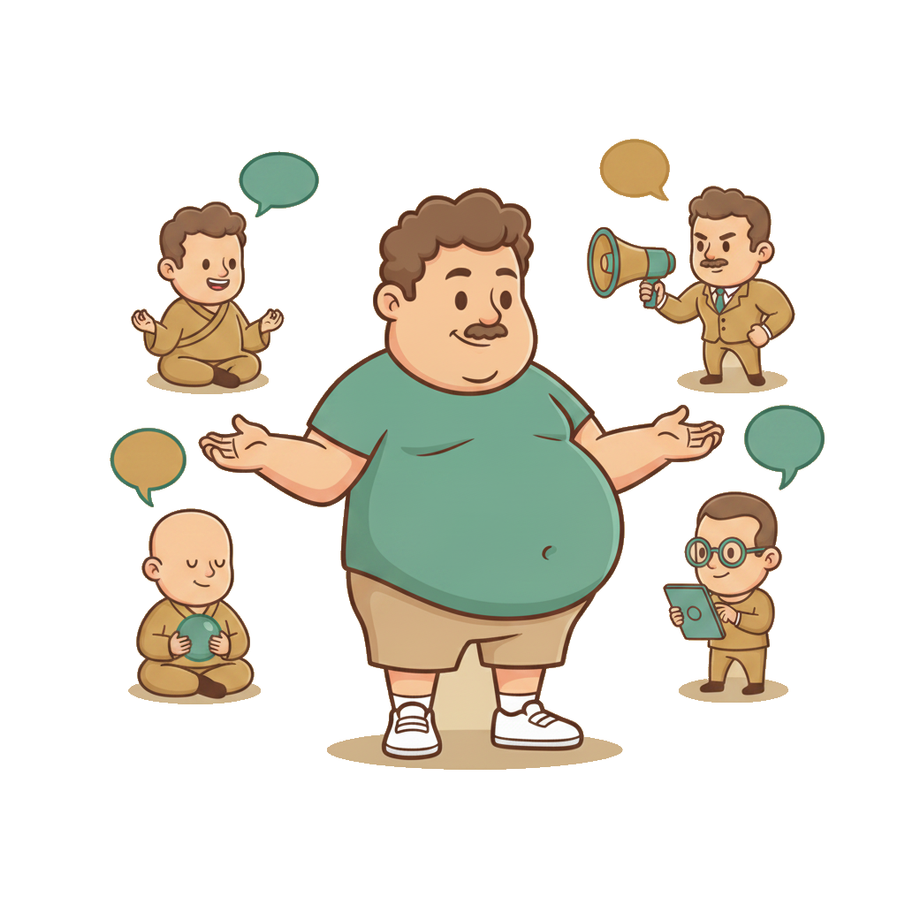
Блок 4 · DISC — 4 психотипаОдин оффер — четыре разных голоса
Лидирует, перебивает. Сжато, измеримо, без воды. «Диалог как ринг».
Сам продаёт, фонтанирует. Дать пространство, мягко вернуть в структуру.
Тяжело решает. Гарантии, кейсы, «безболезненный шаг».
Тысяча вопросов. Отстройка, таблицы, развёрнутые аргументы.
Crystal → речевые модули
Crystal сканирует профиль (LinkedIn) → выдаёт DISC-тип + плейбук продажи. Дальше: профиль + КП + Claude → адаптация речевых модулей под тип.
Тип D (Captain) буквально диктует скрипт: сразу к сути, пропустить small talk, говорить выгодой в цифрах, дать итоговую цену, поставить дедлайн.
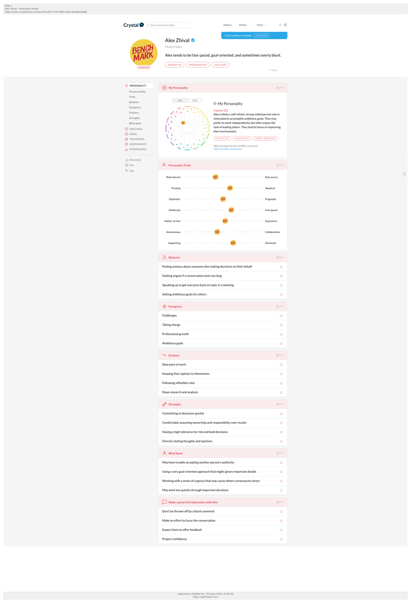
Блок 5 · Выявление болей
Pain → More Pain → Hope → Solution
Pain
Открывающий вопрос — вскрываем боль
More Pain
Углубляем — что будет, если не решить
Hope
Вопрос про идеальное решение
Solution
Мостик к презентации под потребность
Блок 6 · Презентация
ХПВ: не характеристиками, а выгодой

«Ордена», которые нельзя не сказать
Топ-10–15 фактов/побед/цифр о продукте и бренде. «Мы за них заплатили зарплатами и достижениями — а почему-то про это не говорим».
Метод генерации: из USP + отстройки + Sales Points + побед → топ-15 фраз, размечаем по DISC и по этапам скрипта.
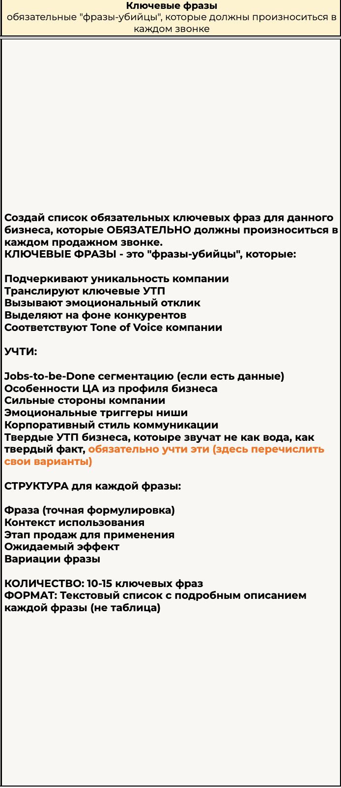
 Блок 7 · Предзакрытие
Блок 7 · Предзакрытие
Вопрос по шкале 10/10
9–10
Идём дальше — к цене и закрытию
7–8
Копаем: чего не хватило до 10? Не проваливаемся в цену
< 7
Возвращаемся к болям/презентации — рано о деньгах

Отработать до того, как возникли
«Мастерство — отрабатывать возражения до того, как они возникли»: вслух даёшь решение ещё до формулировки.
5-шаговый алгоритм
- Присоединение → Комплимент → Локализация → Отработка → «Капитан очевидность»
- Техника «Искренность» для «я подумаю»
- Реестр топ-10 возражений (истинное/ложное · этап)
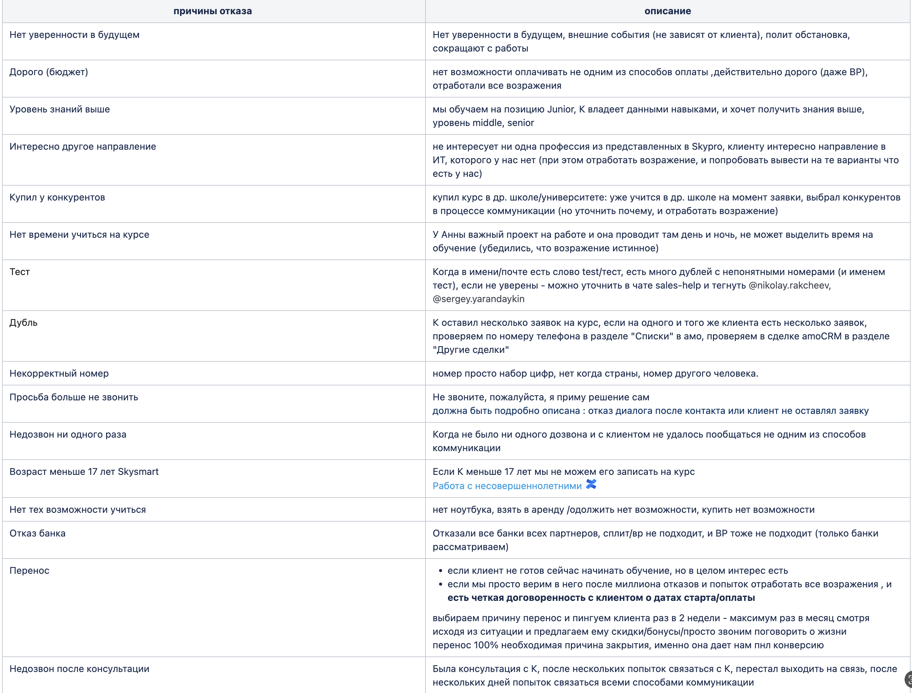
Продуктовый + финансовый каскад
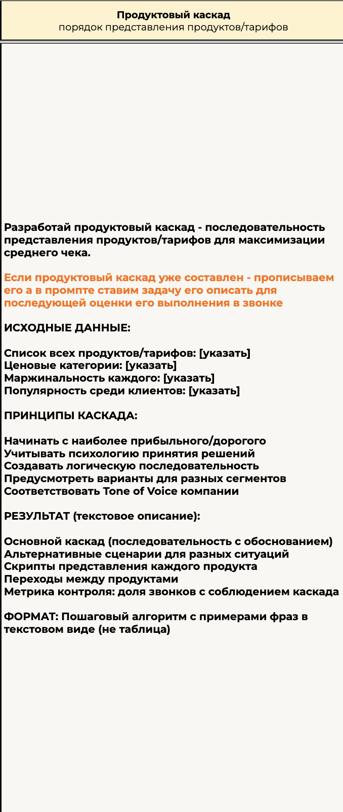
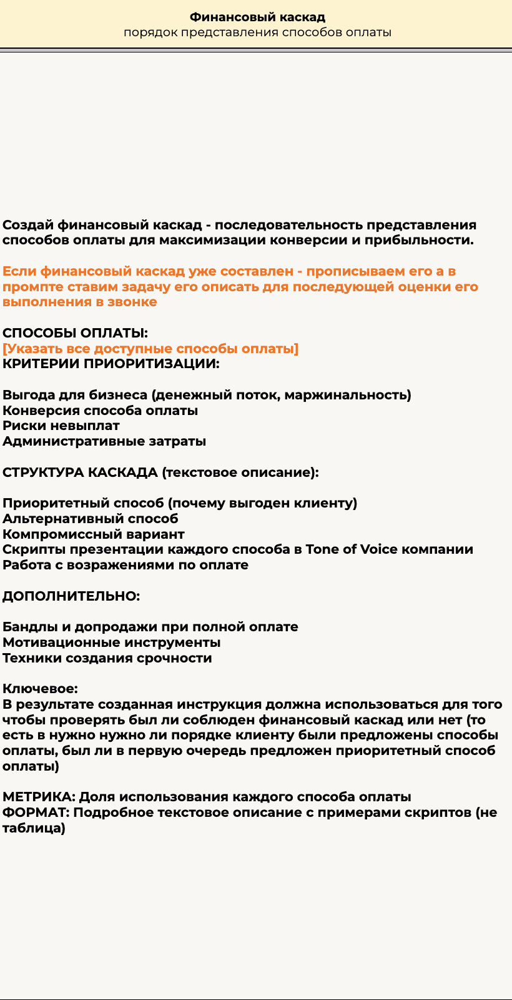
3 версии одного скрипта
| Параметр | A · Горячий | B · Тёплый | C · Холодный |
|---|---|---|---|
| Длина | 5–10 мин | 15–25 мин | 20–30 мин |
| Фокус | Усилить закрытие | Полный + FOMO | Без закрытия |
| Цель звонка | Выставить счёт | Создать срочность | Перейти к касанию |
| Ключевой блок | Цена + CTA | Каскад + FOMO | Догрев / доступ «пощупать» |
Блок 4 · Эталон целиком
Сквозной скрипт — 2 такта, 10 блоков
Такт 1 · Консультация (~25–30 мин)
- Приветствие + позиционирование
- Программирование
- Запрос + потребности + КВАЛ
- Диагностика (ABCDE)
- Разбор → осознание разрыва (WOW-пик)
Такт 2 · Презентация (~30 мин)
- Питч под разрывы (сначала согласие на питч!)
- Возражения до 10/10
- Цена + FOMO + CTA
- Доставка разбора + фолоуап
Внутри скрипта есть метрики
Скрипт можно и нужно замерять — это чек-лист качества звонка и мост к следующему модулю (ОКК на ИИ).
- Произнесены ли ключевые фразы
- Задан ли вопрос-мостик к ХПВ
- Проставлен ли сегмент + DISC
- Был ли вопрос по 10-балльной шкале
- Пройдены ли оба «шлагбаума»
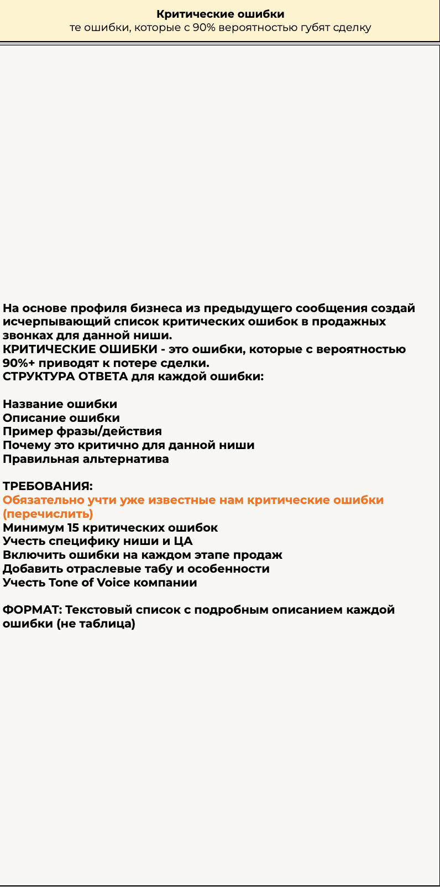
 ⚡ Живая сборка
⚡ Живая сборка
Собираем блок скрипта
прямо сейчас
Берём одну воронку, за 15 минут собираем блок презентации (ХПВ) + ключевые фразы из CJM/JTBD через Claude — и тут же прогоняем через нейролевку.
Живая сборка · Шаг 1 — вход
Топливо у вас уже собрано
Опорные материалы из прошлых модулей становятся входом для скрипта. Ничего собирать заново.
CJM + AAARRR
Узкие места и окна
JTBD-сегменты
Боли, язык клиента
Отстройка + USP
Чем сильнее конкурентов
ToV + кейсы
Как говорим, чем доказываем
Промпт под блок скрипта
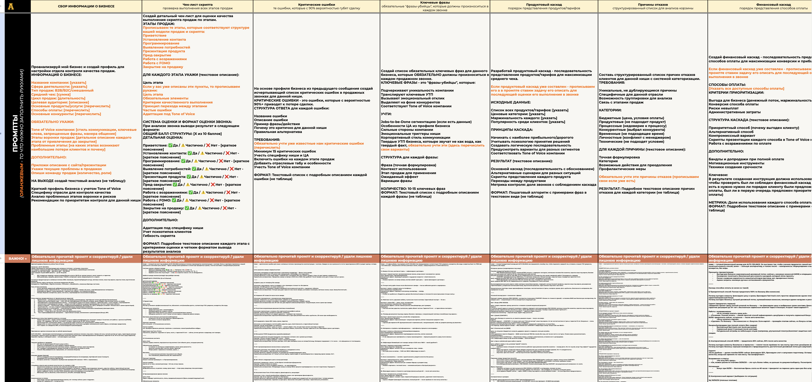
 Живая сборка · Шаг 3 — что выдал Claude
Живая сборка · Шаг 3 — что выдал Claude
Готовый блок презентации
Нейролевка: Claude играет клиента
Прогоняем скрипт через AI-тренажёр: Claude отыгрывает скептичного клиента нужного DISC-типа, а потом даёт обратную связь.
- Оценка по 9 этапам, 0–100%
- Где «просел» — конкретные блоки
- 3 рекомендации, что усилить
- Повтор до автоматизма — без выгорания тренера

Арсенал продавца — 6 слоёв
 Блок 5 · Приоритет
Блок 5 · Приоритет
Минимальный арсенал vs расширенный
🟢 MVP — собери обязательно
- Смысловая рамка
- Скрипт: 10 блоков + 3 версии
- Квал-вопросы (записывать дословно)
- Банк возражений + каскады
- Детальный разбор блоков (как произносить)
- Мини-регламент касаний + 3–5 кейсов
🔵 Расширенный — дальше
- Инструмент-диагностика (serverless + LLM)
- Денежный слой (разрыв в рублях)
- Полная система обучения + аттестация
- Авто-прогрев (бот + cron) + дашборд
- Сайт-арсенал с копи-скриптами
Регламент дозвона и прогрева
- Первый звонок — до 5 минут после заявки
- Дни 1–5: ~9–10 звонков + ~5 сообщений, мультиканал
- Постсейл: 5 касаний (0 / +1 / +3 / +7 / +14)
- Правило 5–7 касаний до Lost
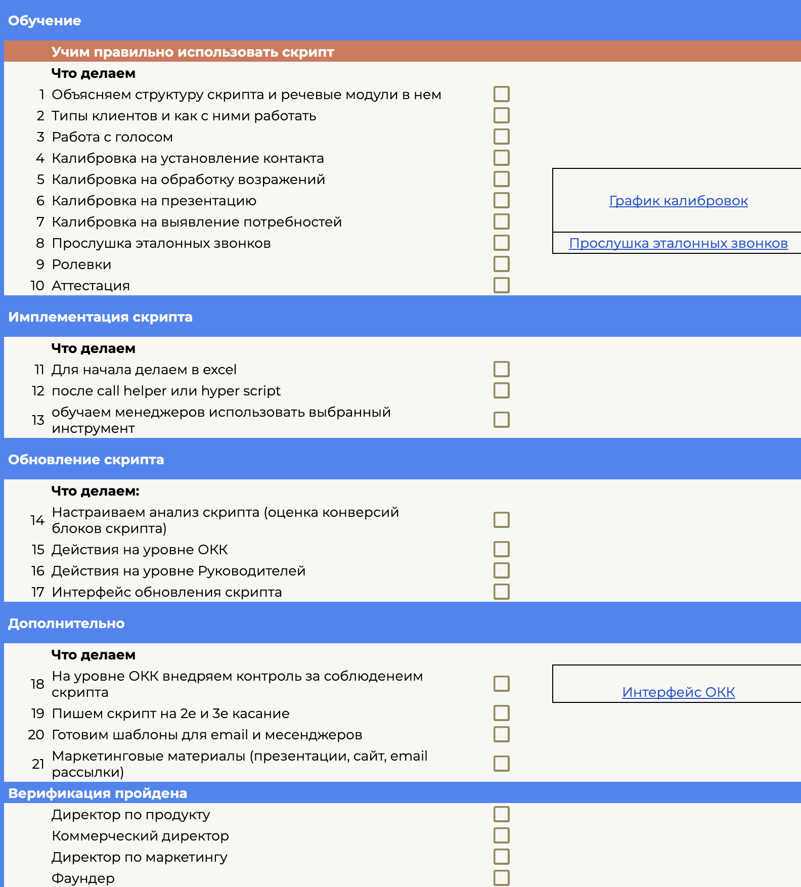
Блок 5 · Воспроизводимость
Скрипт живёт только в обучении
Онбординг ~2 недели
Контекст → скрипт+инструмент+CRM → наблюдение эталонов → ролевки → под супервизией → сам+QA
Калибровки + ролевки
Разбор блоков, прослушка эталонов, ≥5 ролевых игр
Аттестация
Теория ≥90% · ролевая по чек-листу (100 баллов, порог 80) · 10 боевых звонков
Блок 5 · Живой образец
Как собран реальный арсенал
Арсенал карьерной консультации A-Players — на одной странице для команды:
Регламент
Вход для команды: правила, каденция дозвона, что фиксировать
Хаб материалов
11 карточек с кнопкой «Копировать» — кейсы, гайды, подкаст
Кейсы
Карточки «роль от → роль к» под скрин для клиента
🥊 AI-тренажёр скриптов
Claude отыгрывает клиента и гоняет менеджера по скрипту до автоматизма — без выгорания тренера.
- Выбираешь сегмент (A/B/C) и DISC-тип клиента
- Проходишь звонок в ролях
- Оценка по 9 этапам + слабые блоки + 3 совета
- Повторяешь, пока не «зелёный»
Инструменты
🤖 Скрипт-сборщик (Claude Project)
Плейбуки внутри
CJM, ABC/DISC, ХПВ, возражения, каскады — уже в знаниях проекта
20 промптов тетради
От CJM до сборки — по порядку, в одном чате
Собирает и челленджит
Генерит блоки скрипта из твоего контекста и проверяет их
Домашнее задание
Собери свой продающий скрипт
Главный результат — заполненная рабочая тетрадь: CJM → AAARRR → 9 блоков → сборка → защита. 26 шагов, ~20 промптов, 3–6 часов.
Что сдаёшь
- CJM с прорисованными точками роста
- AAARRR-разбор + топ-3 горлышка
- Скрипт в 3 версиях (горячий/тёплый/холодный)
- DISC-шпаргалка + готовность защитить
Рабочая тетрадь
Копируешь себе. Внутри — 26 шагов, промпты и чек-листы. Работай в одном чате с Claude.
Домашка · маршрут тетради
26 шагов · 7 этапов
Домашка · Шаг 0
10 опорных материалов на входе
Бриф компании
JTBD-сегментация
Core-сегменты
Конкуренты (топ-10)
Отстройка (5 отличий)
Tone of Voice
Позиционирование
Продукты + цены
Данные о воронке
Кейсы + соцдоказ.
Домашка · критерии
Что значит «сделано хорошо»
Критерии
- Не один скрипт, а 3 версии под сегменты
- Каждый блок адаптирован под DISC
- Есть ордена, опережающие возражения, каскады
- Прошёл нейролевку ≥ порога
Формат защиты
Разбираем связку CJM → горлышки → блоки скрипта, которые их расшивают. Вплоть до живой продажи-демо.
Итог модуля
Скрипт, который
продаёт за вас
CJM → узкие места → 9 блоков → 3 версии → нейролевка → арсенал. Не «красивый документ», а инструмент, который отдаёшь менеджерам и который воспроизводимо приносит деньги.